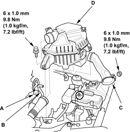
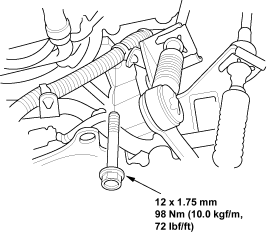
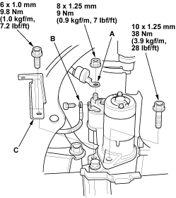
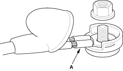

- Disconnect the negative cable from the battery first, then the positive cable.
- Disconnect the mass air flow (MAF) sensor connector (A) and remove the vacuum hose (B), then remove the air intake duct (C) and air cleaner housing (D).

- Remove the starter mounting bolt.

- Remove the splash shield (see step 19 on page 5-5).
- Disconnect the starter cable (A) and BLK/WHT wire (B).

- Remove the harness bracket (C), then remove the starter.
- Install in the reverse order of removal. Make sure the crimped side of the ring terminal (A) is facing out.

- Connect the positive cable and negative cable to the battery.
- Retest starter performance.